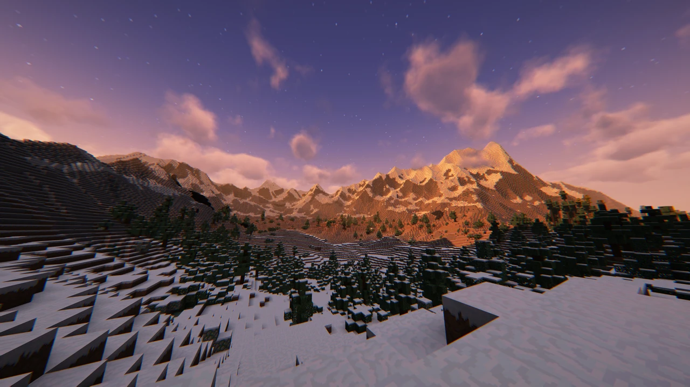

- 第一章 项目目标、技术基础与首次预筛
- 第二章 初期批量筛选与 V8 评价体系
- 第三章 四维度评价体系与 V9 实现
- 第四章 V10 自动流水线与多路线生成
- 4.1 分级流程、程序适配与首轮运行
- 4.2 下界矿层预测与生成顺序对照
- 4.3 多路线方案与探针接口
- 4.4 小样本多路线测试与数据隔离
- 4.5 正式批次的内存故障与轻量化修复
- 第五章 正式批次结果与评分方法修订
- 5.1 首个正式批次与共同指标比较
- 5.2 资源证据检查与历史数据复用
- 5.3 第二个千颗批次及候选比较
- 5.4 下界五项评价与月球离线重评分
- 第六章 V11 大规模初筛与人工收藏
- 6.1 快速初筛的设计、性能与数据成本
- 6.2 四项初筛评分与门槛校准
- 6.3 网页比较、人工收藏与搜索规模
- 第七章 57 颗候选深筛与预测算法核验
- 7.1 57 颗候选的深筛框架与首轮数据审计
- 7.1.1 从大规模初筛转入候选深筛
- 7.1.2 人工收藏名单的核验
- 7.1.3 V11深筛流程的调整
- 7.1.4 22项深筛检测体系的确认
- 7.1.5 深筛证据格式的统一
- 7.1.6 57颗Stage1程序的适配
- 7.1.7 Stage1首轮结果
- 7.1.8 发现Stage1报告丢失数据
- 7.1.9 原始记录重新审计
- 7.1.10 Roguelike探针异常
- 7.1.11 修订版Stage1报告
- 7.1.12 补充虚拟油田与矿脉预测
- 7.1.13 资源补测后的实际状态
- 7.1.14 为什么不立即生成57颗完整世界
- 7.1.15 V11首轮深筛暴露的问题
- 7.1.16 本阶段成果
- 7.1.17 57 颗首轮深筛小结
- 7.2 固定坐标核验与堡垒预测修复
- 7.2.1 从候选预测转向固定坐标验证
- 7.2.2 固定坐标实验设计
- 7.2.3 第一轮固定坐标检测结果
- 7.2.4 下界堡垒候选验证失败
- 7.2.5 排查Biomes O’ Plenty的下界生成器
- 7.2.6 堡垒生成函数的反射问题
- 7.2.7 根因：Hodgepodge修改了随机数实现
- 7.2.8 修正堡垒候选生成算法
- 7.2.9 修正候选的运行时验证
- 7.2.10 末地矿石类型的进一步确认
- 7.2.11 修正历史V11下界堡垒评分
- 7.2.12 历史57颗收藏种子的评分变化
- 7.2.13 堡垒修复补丁与网页适配
- 7.2.14 57颗候选名单的重新调整
- 7.2.15 本阶段的核心技术问题
- 7.2.16 固定坐标核验与修复小结
- 7.3 Roguelike 预筛修复与 56 颗重审
- 7.1 57 颗候选的深筛框架与首轮数据审计
- 第八章 39 颗候选的首次生成与资源审计
- 8.1 候选确定、批量失败与离线恢复
- 8.2 物理补测、资源识别与覆盖审计
- 8.3 单轮参考榜与 11 颗候选名单
- 8.4 进入多轮比较前的待验证项目
- 第九章 11 颗多轮比较与首次决选
- 第十章 红砖房核查与最终种子的重新选拔
- 第十一章 最终存档预生成与项目结果
